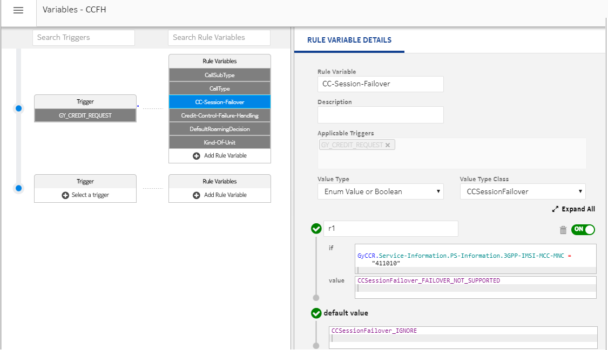

The CC-Session-Failover AVP contains information about whether moving the credit-control message stream to a backup server during an ongoing credit-control session is supported. It can have three values FAILOVER_NOT_SUPPORTED (0), FAILOVER_SUPPORTED(1), and IGNORE (2). The value of this AVP is selected while processing through the active RSV. If the value is configured as IGNORE or the default parameter is missing in active RSV, then CCSF AVP is not returned in CCA.
 Note:
Note:The values of CCSF can be configured as an output of the rule as shown in the following figure.
Figure: CCSF
